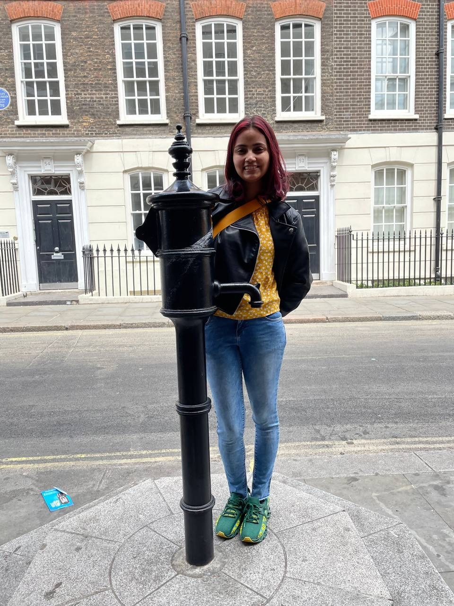

When you grow up with parents working in specialized fields, you usually take one of two paths: veer off in a totally different direction or follow in their footsteps. I fall into the second category. My mom started working toward her PhD when I was three years old, and that’s when I fell in love with science.
By the time I was five, she was taking me into the lab for a few hours each week when her experiments ran long. While she worked, I sat in the corner of the lab, entertained by conducting small chores. Even the smallest glove size was too large for my five-year-old hands, but I wore them and happily filled pipette tip boxes making fun new patterns. When I was ten, she defended her thesis. My dad and I got her a card that read, “We don’t know what you did, but we know it was impressive!” Now, as a PhD student myself, I do know what she did, and just how impressive it really was.
Her dedication to science and research shaped my childhood, and the lab she worked in was a welcoming, inspiring place. The grad students read books with me when my mother was busy conducting experiments, and I considered them to be family. They all seemed so wise and shared the same passion for science that really shaped my childhood. By high school, I knew I wanted to pursue research at a high level and eventually earn a PhD. I applied to, and was accepted by, the same university where she earned hers. Before I even registered for classes, I started working as an undergraduate researcher in the very lab where she’d done her thesis work. Her former advisor was thrilled to have me there, continuing the family legacy.
At that point, I wasn’t sure exactly what kind of research I wanted to do. Like many early science students, I had big dreams: curing cancer with virus-delivered drugs or discovering a new super-antibiotic to wipe out all harmful bacteria. But in that lab, I found a different calling.
The lab focused on water quality microbiology. We were trying to figure out what was increasing bacterial levels in recreational water bodies, like beaches, rivers, and lakes. It felt like we were poop detectives. Was it a deer with a stomach ache? A leaky sewage pipe? We’d investigate by heading to the scene (wherever local agencies directed us), collecting evidence (water samples), analyzing them (using tests to identify genetic markers from animals or humans), and reporting back our findings. I loved the intersection of microbiology, environmental science, and public health.
Then the pandemic hit.
When cases of COVID-19 started increasing, scientists realized that they needed a fast and inexpensive method to identify areas with large numbers of infected individuals, and they turned to wastewater surveillance. As someone already working with wastewater, I understood the untapped potential of the information it held. When someone is infected with a microorganism, that organism often shows up in their waste. Before 2020, wastewater surveillance was mainly used to track poliovirus, an infectious disease that spreads through contaminated food, water, or contact with an infected person. Most people don’t get sick from polio, but in serious cases, it can cause paralysis or even death. Even though polio doesn’t usually cause stomach symptoms, the virus appears in large amounts in feces and can survive for long periods in wastewater. In fact, wastewater surveillance for polio has been in use since 1988, helping detect outbreaks both in countries where the virus was thought to be eradicated and where it’s still common.

The first scientists to track SARS-CoV-2 in wastewater were in the Netherlands. They successfully estimated how many people were infected in a city, before clinical case numbers started to rise. Though COVID-19 doesn’t typically cause gastrointestinal symptoms, high levels of SARS-CoV-2 were found in patients’ fecal samples. That breakthrough prompted governments around the world to fund and expand wastewater surveillance programs1.
Building on that success, scientists began looking even deeper. Today, we use wastewater surveillance to monitor not just viruses like Influenza A, mpox, and norovirus, but also fungi like Candida auris (which resists many antifungal treatments), and even antibiotic resistance genes.
And we’re not stopping there.
A newer approach, wastewater sequencing, goes beyond identifying whether a virus is present. It looks at which version is present. For example, in January 2021, there were two variants of SARS-CoV-2 circulating, alpha and beta, and it was crucial to differentiate between them because beta was believed to be more infectious. If alpha could infect two people, beta might infect three. That may not seem like a huge difference, but it matters at the population level. Sequencing can give public health officials early warnings about which variants were spreading and helped shape decisions to slow the spread.
I found this combination of sequencing and surveillance fascinating, and it’s what led me to where I am now. I’m currently a second-year PhD student designing a method to sequence different Influenza A sub-clades from wastewater. A sub-clade is a group of influenza viruses that have similar genetic backgrounds, and being able to sort a virus in this way can help track its circulation. Influenza viruses are classified based on their genetic makeup, particularly a segment called “H.” You may have heard of H5N1 or bird flu in the news. This specific subtype has been around since the late 1990s, but recently a new sub-clade has emerged, one that can infect cows2–4. That’s raising alarms about whether it could jump to other mammals, like humans.
Right now, wastewater surveillance can detect if H5N1 is present. But what we can’t yet confirm is whether it’s the more dangerous sub-clade circulating in cows, or just one that’s commonly circulating in birds. That’s where my work comes in. I hope to use wastewater sequencing to tell the difference. If we can do that, we’ll not only help prevent the spread of bird flu, but also reduce unnecessary fear when people hear that H5N1 was detected in their local wastewater. I am working on a protocol that will identify sources of fecal matter in wastewater and the sub-clade of influenza A virus that is circulating. This protocol can eventually be implemented across the country and potentially globally to use in response to detections of H5N1 in wastewater.
To me, the role of a scientist is to expand the knowledge in my field in a way that directly benefits my community. Research like my own has led to discoveries that have saved millions of lives. As I learned from my mother early on, science is about understanding how the world works, and using that understanding to create a better, safer, and more informed society.
